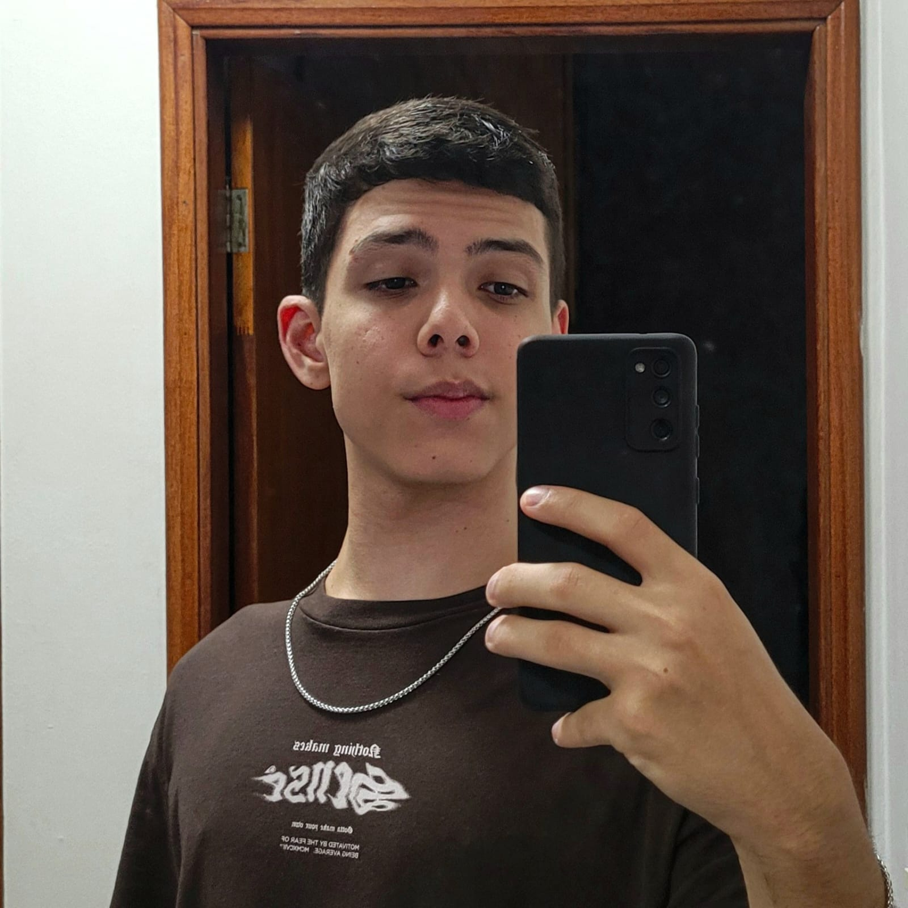

Meu nome é Lucas José Gomes Oliveira, atualmente estou com 17 anos e cursando Engenharia de Software no Centro Universitário Filadélfia - UniFil (2 período).
Escolhi o meu curso pois sempre tive uma certa facilidade e afinidade com certas tecnologias, sempre me interessei pelo assunto e sempre tive vontade de aprender mais sobre a área de programação.
Me considero uma pessoa bem comunicativa e com certa tranquilidade de falar com os outros. Meu idioma nativo é o Português, porém tenho possuo um certo grau de conhecimento em Inglês.
Endereço: Rua José Roque Salton 250
Bairro: Terra Bonita - Londrina/PR
CEP: 86047622
Telefone: (43) 99610 - 5977
Nunca trabalhei antes, sempre fui uma pessoa bem caseira e focada em meus estudos.
Entretanto, atualmente eu colaboro no LondriTech como monitor, ajudo no que eu posso e tento ajudar as crianças a aprenderem e entenderem cada vez mais de programação.
Como dito anteriormente estou cursando Engenharia de Software no período noturno, em meu curso já começamos a ver algumas linguagens como: Java, Python, HTML, CSS e outras.
Porém, em meu curso me surpreendi que não existe apenas uma área para você seguir, caso você não queira trabalhar diretamente com a programação existe a parte de Gestão de Projetos, onde você pode organizar a forma como a equipe de desenvolvimento vai trabalhar e quais os passos a serem seguidos, podendo utlizar os métodos: Kanban, Scrum ou outros.
Além de meu curso de graduação, eu faço meu curso de Inglês na Cultura Inglesa, retomei este ano a fazer minhas aulas de Inglês, pois em minha área o mercado de trabalho se abrange muito tendo conhecimento em Inglês, atualmente estou no Teen Plus 3.